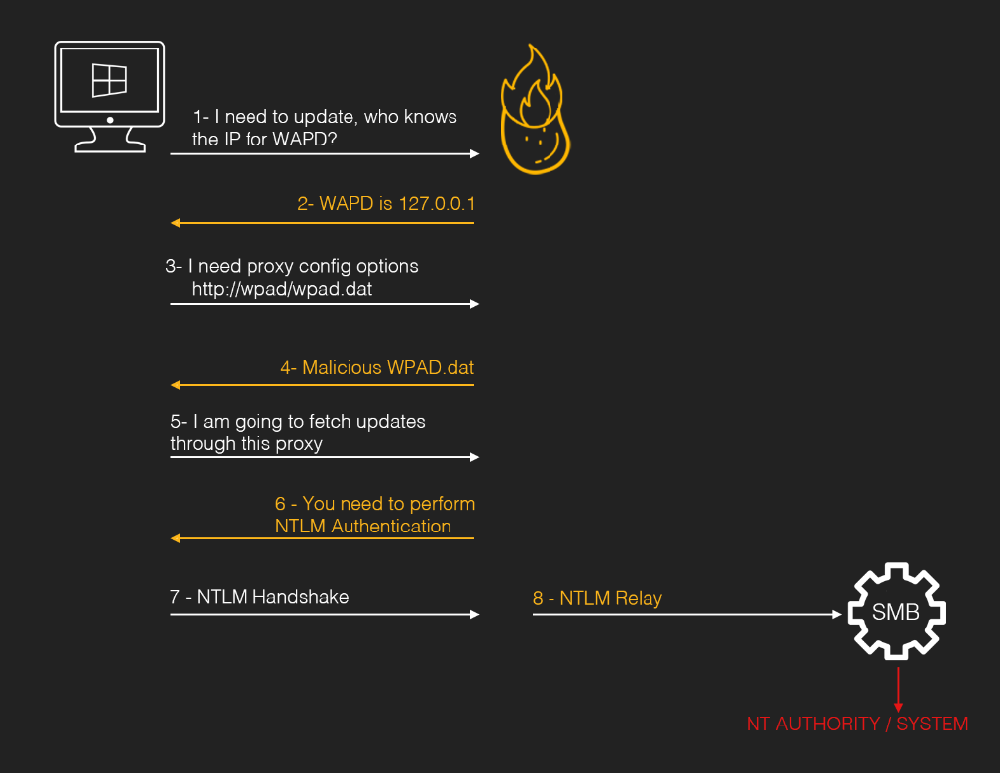
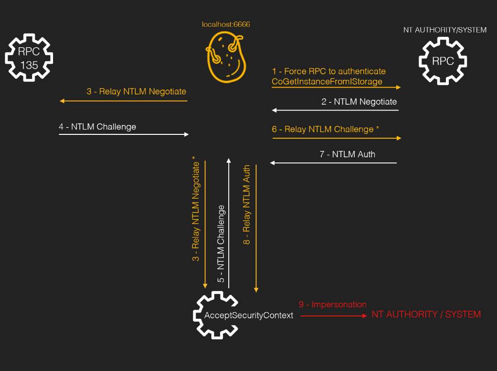

NTLM Relay及相关原理
目录
筑基
土豆
Origin Potato_MS08-068 (土豆始祖漏洞)
本地smb→smb
修复方案：
主机 A 向主机 B(访问 \B) 进行 SMB 认证的时候，将 pszTargetName 设置为 cifs/B, 然后在 type 2 拿到主机 B 发送 Challenge 之后，在 lsass 里面缓存 (Challenge,cifs/B)。
然后主机 B 在拿到主机 A 的 type 3之后，会去查看 lsass 里面有没有缓存 (Challenge,cifs/b)，如果存在缓存，那么认证失败。
这种情况底下，如果主机 B 和主机 A 是不同的主机的话，那 lsass 里面就不会缓存 (Challenge,cifs/B)。如果是同一台主机的话，那 lsass 里面肯定有缓存，这个时候就会认证失败。
简而言之：主机收到chanllage（type 2）后会在本地对其进行一个缓存记录，在收到type 3后会校验本地是否有type 2对应的记录。如果有记录，就说明是本地smb到smb的Relay，返回校验失败。
Hot Potato
利用windows update，实现http到smb的relay
-
怎么发起ntlm请求
发起ntlm请求请求的方式:
配合NBNS投毒欺骗和伪造WPAD代理服务器拿到用户的
Net-NTML hash，所有的HTTP请求将会被重定向至 "http://localhost/GETHASHESxxxxx" ，其中的xxxxx表示的是某些唯一标识符。将会影响目标主机中所有的用户，包括管理员账户和系统账户 2. 拿到ntlm 请求之后要做什么MS08-068虽然限制了同台主机之间smb到smb的Relay，但是并没有限制从http到smb，我们配置配合NBNS投毒欺骗和伪造WPAD代理服务器拿到的ntlm请求说http的形式，我们可以直接relay 到本机的smb。 3. 服务端是否要求签名
我们Relay到的服务端协议是smb，除非是域内的域控，不然在工作组环节底下，或者域内的域成员机器，都是不要求签名的。

修复：
MS16-077 WPAD Name Resolution will not use NetBIOS (CVE-2016-3213) and does not send credential when requesting the PAC file(CVE-2016-3236). WAPD MITM Attack is patched.
Rotten Potato
简而言之：是个提权。 首先通过调API使system权限的COM组件（BITS）来访问我们的监听器，执行NTLM认证，在此期间我们通过调用一系列API生成安全上下文，最终system的token便会留在我们的安全上下文中。如果我们有SelmpersonatePrivilege权限（iis，sql server基本上都有这个权限），那么就可以模拟system账户的token，创建新进程，从而提权。
可能有人一开始在读其他文章时会疑惑，为什么还要专门向135（RPC）端口发送type 1 获得一个challange呢？我一开始也很疑惑，直到看了这个以后https://www.youtube.com/watch?v=8Wjs__mWOKI才知道原来只是把135发回来的type 2包当一个模板罢了...

修复：
technique won’t work on versions >= Windows 10 1809 & Windows Server 2019。 juicy potato同理
Juicy Potato
Rotten Potato用的COM对象是BITS，但是在后来的版本中，windows为了修复rotten potato便禁用了BITS，然后把6666端口占用了（rotten potato POC的默认端口）。
不让用BITS，那就找其它的COM对象不就行了。不让用6666端口那换个端口不就行了。
找COM对象只需要满足这几个条件即可：
1.能被带有impersonation 权限的服务账户实例化（调用CoGetInstanceFromIStorage向我们的listener进行NTLM认证）
2.继承自IMarshal 接口，只有继承自这个接口才可以在通讯过程中触发NTLM认证
3.由administrator或system运行的com对象
ohpe师傅已经找到了很多COM对象
http://ohpe.it/juicy-potato/CLSID/
修复：
由于本质和Rotten Potato没啥区别，所以Rotten Potato死了这个也跟着死了：technique won’t work on versions >= Windows 10 1809 & Windows Server 2019
具体是怎么修复的呢？这个对于后面的rogue potato来说很重要。从decoder师傅的文章中（https://decoder.cloud/2018/10/29/no-more-rotten-juicy-potato/）可以总结出修复方法为